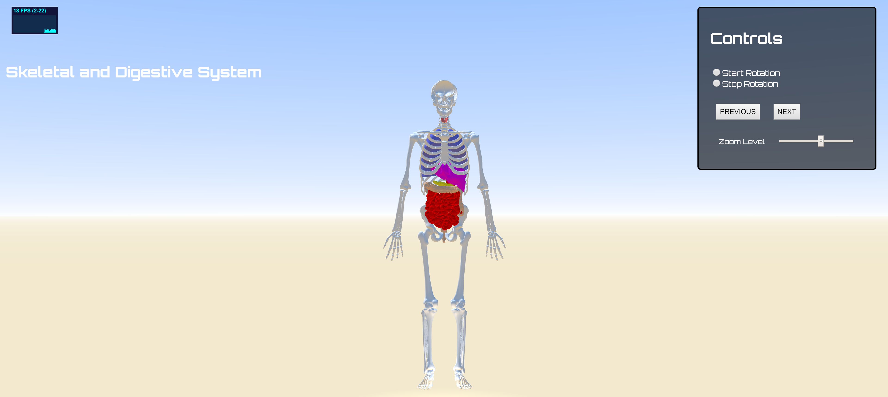

Body Browser
This project uses
WebGL and
Three.js to show human male body (skeletal, muscular,
normal)
in the browser.
The demo uses lighting ,shaders, materials ,and displays models in dae (COLLADA) format directly in
the browser.
Three.js is a powerful framework for showing 3d graphics in the browser. All the models were
taken from Clara.io. Check the demo for more.
Screenshot
